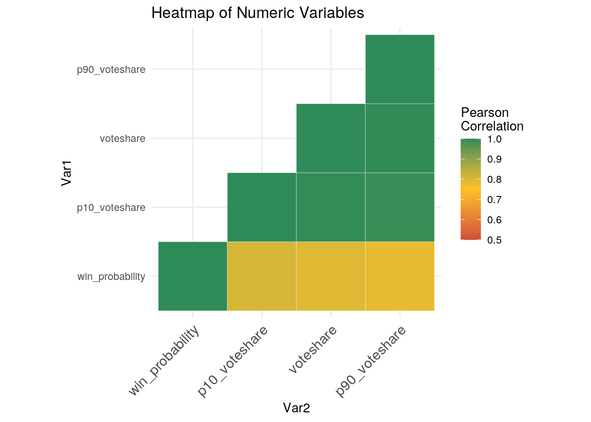
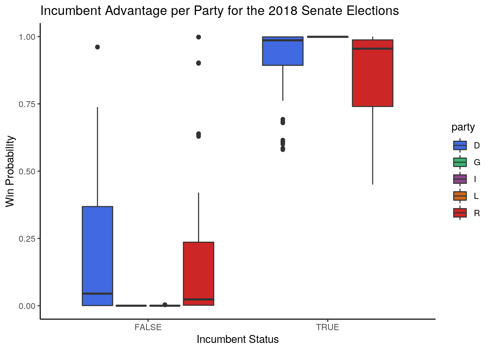
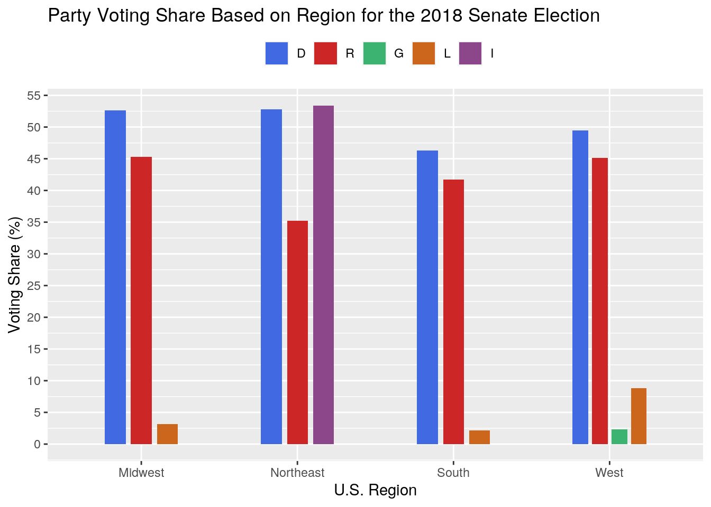
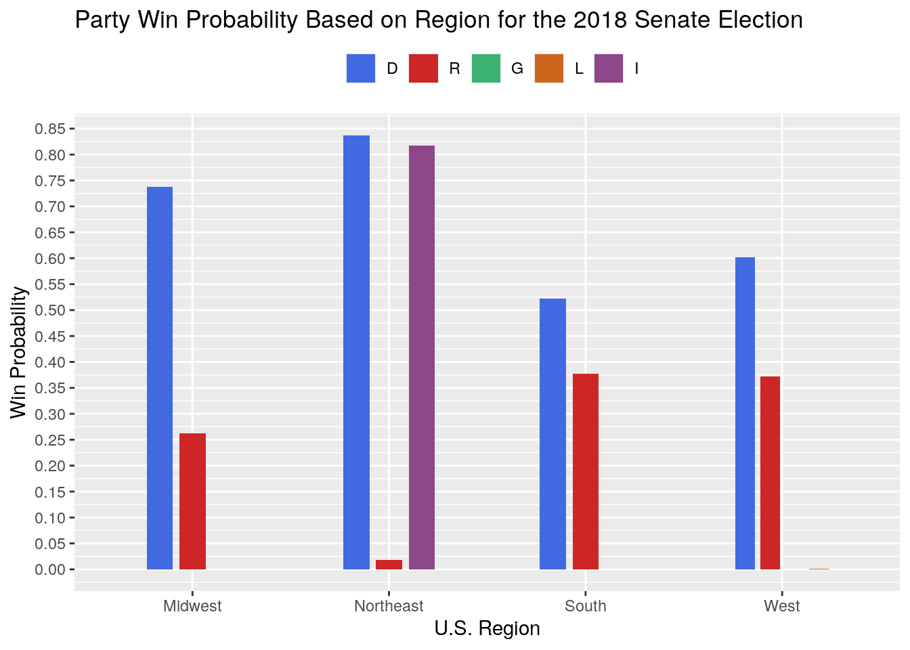
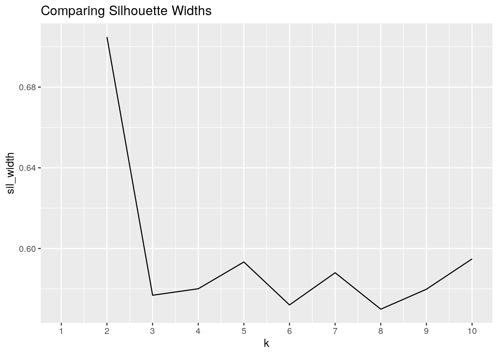
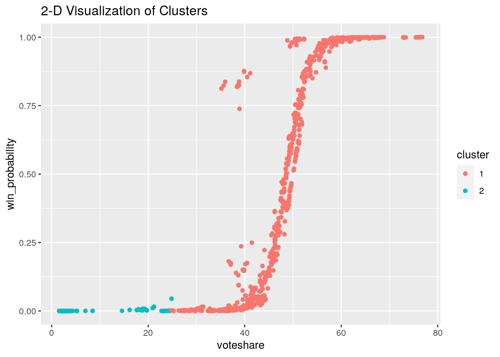

# Collecting Data install.packages('fivethirtyeight')
library(fivethirtyeight)
library(tidyverse)
senate_seat_forecast <- senate_seat_forecast
state_info <- state_infoThe two datasets chosen for this exploratory analysis are the Senate Seat Forecast data from the 2018 elections and State Information data, erived from the fivethirtyeight package. The Senate Seat forecast data includes 12 variables with 28,353 observations. Select variables of interest in this dataset are: forecaste data, state abbreviation, candidate, party affiliation, incumbent status, probability of winning, voter share, 10th percentile voter share, and 90th percentile voting share. Additionally, the State Information dataset comprises 51 observations (includes Washington, D.C.) with the following four variables: state, state abbreviation, division, and region.
These two datasets are of particular interest because the 2018 Senate election marked the first time I was able to vote. Casting my ballot in TX during a contentious and close Senate race piqued my interest in understanding the broader political landscape of our country and implications of a predominantly two-party system. Potential associations I expect from the data include region/state differences in winning probability based on party affiliation (i.e.: states in the South typically have Republican ties), general low voting share and winning probability values for third party candidates, and a higher winning probability for incumbent candidates.
# Renaming Common Variable: state abbreviation
senate_seat_forecast <- rename(senate_seat_forecast, state_abbrev = state)
# Joining Datasets
merged_data <- senate_seat_forecast %>% left_join(state_info,
by = "state_abbrev")The two datasets were joined across the variable "state abbreviation," which was renamed in the Senate Seat Forecast dataset to match that in the State Information dataset. A left join was used to merge the dataset in order to preserve the numeric data from Senate Seat Forecast and accordingly add matches from the Senate Information dataset. The case that was dropped upon joining was Washington, D.C., which is expected because D.C. does not have representation in the Senate.
# Exploring with dplyr functions
merged_data_edit <- merged_data %>% filter(complete.cases(merged_data))
merged_data_edit %>% select(forecastdate, candidate, voteshare,
state) %>% group_by(candidate, state) %>% summarize(mean_voteshare_candidate = mean(voteshare,
na.rm = T)) %>% arrange(desc(mean_voteshare_candidate))## # A tibble: 83 x 3
## # Groups: candidate [83]
## candidate state mean_voteshare_candidate
## <fct> <chr> <dbl>
## 1 Mazie K. Hirono Hawaii 75.7
## 2 Bernard Sanders Vermont 68.0
## 3 John Barrasso Wyoming 67.5
## 4 Benjamin L. Cardin Maryland 66.5
## 5 Kirsten E. Gillibrand New York 66.3
## 6 Sheldon Whitehouse Rhode Island 64.5
## 7 Elizabeth Warren Massachusetts 63.2
## 8 Christopher Murphy Connecticut 61.5
## 9 Angus S. King Jr. Maine 60.9
## 10 Maria Cantwell Washington 60.7
## # … with 73 more rowsmerged_data_edit %>% group_by(candidate, party) %>% summarize(mean_win_candidate = mean(win_probability,
na.rm = T))## # A tibble: 83 x 3
## # Groups: candidate [83]
## candidate party mean_win_candidate
## <fct> <fct> <dbl>
## 1 Amy Klobuchar D 0.996
## 2 Angela Green G 0.0000160
## 3 Angus S. King Jr. I 0.993
## 4 Benjamin L. Cardin D 0.999
## 5 Bernard Sanders I 1.00
## 6 Beto O'Rourke D 0.241
## 7 Bill Nelson D 0.597
## 8 Bob Flanders R 0.00438
## 9 Bob Hugin R 0.0992
## 10 Chele Farley R 0.000389
## # … with 73 more rowsmerged_data_edit_diff <- merged_data_edit %>% mutate(voteshare_diff = p90_voteshare -
p10_voteshare) %>% group_by(party) %>% summarize(mean_voteshare_diff = mean(voteshare_diff,
na.rm = T))
glimpse(merged_data_edit_diff)## Rows: 5
## Columns: 2
## $ party <fct> D, G, I, L, R
## $ mean_voteshare_diff <dbl> 10.473690, 3.940714, 11.282622, 5.622347, 10.8079…merged_data_edit_percents <- merged_data_edit %>% mutate(win_percent = win_probability *
100) %>% group_by(candidate) %>% summarize(sd_win_percent = sd(win_percent,
na.rm = T))
glimpse(merged_data_edit_percents)## Rows: 83
## Columns: 2
## $ candidate <fct> Amy Klobuchar, Angela Green, Angus S. King Jr., Benjam…
## $ sd_win_percent <dbl> 0.486021652, 0.003671047, 0.736232450, 0.083359196, 0.…# Number of Unique Senate Candidates in 2018
merged_data_edit %>% summarize(n_distinct(candidate))## # A tibble: 1 x 1
## `n_distinct(candidate)`
## <int>
## 1 83# General Summary Statistics
summary <- merged_data_edit %>% group_by(state, party) %>% summarize_if(is.numeric,
c(mean, sd, min, max, var))
summary = summary[, !grepl("^class", names(summary))]
names(summary) <- gsub("fn1", "mean", names(summary))
names(summary) <- gsub("fn2", "sd", names(summary))
names(summary) <- gsub("fn3", "min", names(summary))
names(summary) <- gsub("fn4", "max", names(summary))
names(summary) <- gsub("fn5", "var", names(summary))
glimpse(summary)## Rows: 76
## Columns: 22
## Groups: state [33]
## $ state <chr> "Arizona", "Arizona", "Arizona", "California", "…
## $ party <fct> D, G, R, D, D, R, D, R, D, R, D, R, D, L, R, D, …
## $ win_probability_mean <dbl> 6.790585e-01, 1.598639e-05, 3.209177e-01, 5.0000…
## $ voteshare_mean <dbl> 50.514966, 2.362143, 47.123197, 50.000000, 61.45…
## $ p10_voteshare_mean <dbl> 45.8253741, 0.6323469, 42.4386054, 44.1269388, 5…
## $ p90_voteshare_mean <dbl> 55.173776, 4.573061, 51.783299, 55.873061, 66.75…
## $ win_probability_sd <dbl> 5.862625e-02, 3.671047e-05, 5.863425e-02, 4.7473…
## $ voteshare_sd <dbl> 0.6872613, 0.3239809, 0.9417125, 10.6537962, 1.9…
## $ p10_voteshare_sd <dbl> 0.41716706, 0.09289211, 1.48361993, 10.65831814,…
## $ p90_voteshare_sd <dbl> 1.2024544, 0.6176921, 0.4963048, 10.6583181, 2.4…
## $ win_probability_min <dbl> 0.5714, 0.0000, 0.1907, 0.0005, 0.9621, 0.0004, …
## $ voteshare_min <dbl> 49.48, 1.96, 44.97, 36.35, 56.22, 31.98, 55.43, …
## $ p10_voteshare_min <dbl> 44.54, 0.49, 39.33, 30.83, 51.36, 24.88, 49.19, …
## $ p90_voteshare_min <dbl> 53.14, 3.73, 50.50, 41.74, 60.97, 37.79, 61.70, …
## $ win_probability_max <dbl> 0.8093, 0.0001, 0.4286, 0.9995, 0.9996, 0.0379, …
## $ voteshare_max <dbl> 52.26, 2.85, 48.48, 63.65, 64.54, 42.05, 62.75, …
## $ p10_voteshare_max <dbl> 46.73, 0.77, 44.80, 58.26, 58.69, 37.27, 57.68, …
## $ p90_voteshare_max <dbl> 57.80, 5.50, 53.43, 69.17, 71.60, 46.98, 67.86, …
## $ win_probability_var <dbl> 3.437037e-03, 1.347659e-09, 3.437975e-03, 2.2537…
## $ voteshare_var <dbl> 0.47232816, 0.10496365, 0.88682251, 113.50337445…
## $ p10_voteshare_var <dbl> 1.740284e-01, 8.628944e-03, 2.201128e+00, 1.1359…
## $ p90_voteshare_var <dbl> 1.44589662, 0.38154350, 0.24631843, 113.59974564…# Overall Data Minimum and Maximum Values
min_max_table <- merged_data_edit %>% summarize(min_win = min(win_probability),
max_win = max(win_probability), min_voteshare = min(voteshare),
max_voteshare = max(voteshare), min_p10 = min(p10_voteshare),
max_p10 = max(p10_voteshare), min_p90 = min(p90_voteshare),
maxp90 = max(p90_voteshare))
glimpse(min_max_table)## Rows: 1
## Columns: 8
## $ min_win <dbl> 0
## $ max_win <dbl> 1
## $ min_voteshare <dbl> 1.5
## $ max_voteshare <dbl> 77.27
## $ min_p10 <dbl> 0.36
## $ max_p10 <dbl> 71.43
## $ min_p90 <dbl> 2.95
## $ maxp90 <dbl> 85.11# Calculating Summary Statistics including untidying and
# tidying functions
wide_view <- merged_data_edit %>% pivot_wider(names_from = party,
values_from = win_probability)
partymeans <- wide_view %>% group_by(region) %>% summarize(meanwinprob_D = mean(D,
na.rm = T), meanwinprob_R = mean(R, na.rm = T), meanwinprob_G = mean(G,
na.rm = T), meanwinprob_L = mean(L, na.rm = T), meanwinprob_I = mean(I,
na.rm = T))
glimpse(partymeans)## Rows: 4
## Columns: 6
## $ region <chr> "Midwest", "Northeast", "South", "West"
## $ meanwinprob_D <dbl> 0.7377696, 0.8371091, 0.5222508, 0.6019286
## $ meanwinprob_R <dbl> 0.26222358, 0.01842266, 0.37774398, 0.37225689
## $ meanwinprob_G <dbl> NaN, NaN, NaN, 1.598639e-05
## $ meanwinprob_L <dbl> 2.006803e-05, NaN, 4.421769e-06, 8.676871e-04
## $ meanwinprob_I <dbl> NaN, 0.817146, NaN, NaN# Retidying Data
tidydata <- wide_view %>% pivot_longer(cols = D:I, names_to = "party",
values_to = "win_prob", values_drop_na = TRUE)
# Additional Interesting Summary Statistics
incumbent_advantage <- merged_data_edit %>% group_by(incumbent) %>%
summarize(mean_win = mean(win_probability, na.rm = T), sd_win = sd(win_probability)) %>%
arrange(desc(mean_win))
glimpse(incumbent_advantage)## Rows: 2
## Columns: 3
## $ incumbent <lgl> TRUE, FALSE
## $ mean_win <dbl> 0.8968181, 0.1543770
## $ sd_win <dbl> 0.1676154, 0.2614893win_prob_partystate <- merged_data_edit %>% group_by(party, state_abbrev) %>%
summarize(mean_win = mean(win_probability, na.rm = T), sd_win = sd(win_probability))
win_prob_partystate[order(win_prob_partystate[, "state_abbrev"]),
]## # A tibble: 76 x 4
## # Groups: party [5]
## party state_abbrev mean_win sd_win
## <fct> <chr> <dbl> <dbl>
## 1 D AZ 0.679 0.0586
## 2 G AZ 0.0000160 0.0000367
## 3 R AZ 0.321 0.0586
## 4 D CA 0.5 0.475
## 5 D CT 0.995 0.00763
## 6 R CT 0.00492 0.00763
## 7 D DE 0.983 0.0254
## 8 R DE 0.0173 0.0254
## 9 D FL 0.597 0.0618
## 10 R FL 0.403 0.0618
## # … with 66 more rows# Correlation Matrix
numericdata <- merged_data_edit %>% select(win_probability, voteshare,
p10_voteshare, p90_voteshare)
numericdata_cor = cor(numericdata, method = c("pearson"))
print(numericdata_cor)## win_probability voteshare p10_voteshare p90_voteshare
## win_probability 1.0000000 0.7940337 0.8062783 0.7819260
## voteshare 0.7940337 1.0000000 0.9977383 0.9982313
## p10_voteshare 0.8062783 0.9977383 1.0000000 0.9919968
## p90_voteshare 0.7819260 0.9982313 0.9919968 1.0000000The number of candidates running in the 2018 Senate elections across all represented states was 83. General summary statistics looked at five functions (mean, standard deviation, minimum, maximum, and variance) of four different numerical variables (winning probability, voting share, 10th percentile voting share, and 90th percentile voting share) for each state across party lines. As an example, when looking at the summary table's first state, Arizona, it can be inferred that the mean voting share for the Democratic Party is 50.52%,47.12% for the Republican Party, and 2.36% for the Green Party. This is consistent with the actual outcomes of the 2018 Senate race in Arizona, which was won by Democrat candidate Kyrsten Sinema with 50% of the votes. These metrics can be extrapolated for all other states using the summary table. Additional dplyr functions were used to find the mean voting share per candidate grouped by state, with Mazie K. Hirano from Hawaii possessing the highest candidate voter share percentage at 75.7%. Some of these general summary statistics were calculated using tidyr functions. Since the data was previously tidy, the pivot_wider function was used to rearrange the data wider based on political party affiliation, with values ascribed to winning probability in order to get mean winning probabilities per party for each U.S. region (for the Midwest, Dem winning probability was predicted as 0.7378, Rep winning probability was 0.2622, and Labor winning probability was close to zero). The data was then re-arranged again to retain its tidiness by using the pivot_longer function.
Furthermore, the mean winning probability for each party across region was investigated. Across all four regions (West, Midwest, South, Northeast), Democrats possessed the highest mean probability of winning; the Northeast especially was projected to favor Democrats by 83.71% on average. Of interesting note, Independents also had a high forecasted probability of winning in the Northeast with an 81.71%. This specifically reflects the party affiliation of Senator Bernie Sanders from Vermont in the Northeast, who is registered as an Independent on the ballot and enjoys a high degree of popularity in his home state. Analysis to assess incumbent advantage indicated that the mean winning probability for incumbents is 89.68% (standard deviation of 16.76%), whereas that for non-incumbents is significantly lower at 15.43% (standard deviation of 26.15%). Correlation indices across all four numeric variables listed above were above 0.75, suggesting a strong, positive, linear relationship across the variables.
# Data Visualizations
# Remove redundant information from correlation matrix
get_lower_tri <- function(numericdata_cor) {
numericdata_cor[upper.tri(numericdata_cor)] <- NA
return(numericdata_cor)
}
get_upper_tri <- function(numericdata_cor) {
numericdata_cor[lower.tri(numericdata_cor)] <- NA
return(numericdata_cor)
}
reorder_cor <- function(numericdata_cor) {
distance <- as.dist((1 - numericdata_cor)/2)
hc <- hclust(distance)
numericdata_cor <- numericdata_cor[hc$order, hc$order]
}
numericdata_cor <- reorder_cor(numericdata_cor)
upper_tri <- get_upper_tri(numericdata_cor)
upper_tri## win_probability p10_voteshare voteshare p90_voteshare
## win_probability 1 0.8062783 0.7940337 0.7819260
## p10_voteshare NA 1.0000000 0.9977383 0.9919968
## voteshare NA NA 1.0000000 0.9982313
## p90_voteshare NA NA NA 1.0000000library(reshape2)
melted_cor <- melt(upper_tri, na.rm = TRUE)
# Heatmap of numeric variables
library(ggplot2)
heatmap <- ggplot(melted_cor, aes(Var2, Var1, fill = value)) +
geom_tile(color = "white") + scale_fill_gradient2(low = "tomato3",
high = "seagreen", mid = "goldenrod1", midpoint = 0.75, limit = c(0.5,
1), space = "Lab", name = "Pearson\nCorrelation") + theme_minimal() +
ggtitle("Heatmap of Numeric Variables") + theme(axis.text.x = element_text(angle = 45,
vjust = 1, size = 12, hjust = 1)) + coord_fixed()
print(heatmap)
# Plotting incumbent advantage win probability by party
incumb_advantage_party <- merged_data_edit %>% select(incumbent,
party, win_probability) %>% slice(1:500)
incumb_advantage_party$party <- as.factor(incumb_advantage_party$party)
head(incumb_advantage_party)## # A tibble: 6 x 3
## incumbent party win_probability
## <lgl> <fct> <dbl>
## 1 FALSE D 0.738
## 2 FALSE R 0.262
## 3 FALSE G 0
## 4 TRUE D 0.999
## 5 FALSE D 0.000600
## 6 TRUE D 0.999boxplot <- ggplot(incumb_advantage_party, aes(x = incumbent,
y = win_probability, fill = party)) + geom_boxplot() + labs(title = "Incumbent Advantage per Party for the 2018 Senate Elections",
x = "Incumbent Status", y = "Win Probability") + theme_classic()
cols <- c(D = "royalblue", G = "mediumseagreen", I = "orchid4",
L = "chocolate3", R = "firebrick3")
boxplot + scale_fill_manual(values = cols)
# Plotting mean voting share based on U.S. region and party
# affiliation
data2 <- merged_data_edit %>% pivot_wider(names_from = party,
values_from = voteshare)
data2 <- data2 %>% select(region, D:I)
voteshare_data.m <- melt(data2, id.vars = "region")
ggplot(voteshare_data.m, aes(region, value)) + geom_bar(aes(fill = variable),
width = 0.4, position = position_dodge(width = 0.5), stat = "summary",
fun = mean) + theme(legend.position = "top", legend.title = element_blank()) +
ggtitle("Party Voting Share Based on Region for the 2018 Senate Election") +
labs(x = "U.S. Region", y = "Voting Share (%)") + scale_fill_manual(values = cols) +
scale_y_continuous(breaks = seq(0, 100, 5))
# Plotting mean winning probability share based on U.S.
# region and party affiliation
data3 <- merged_data_edit %>% pivot_wider(names_from = party,
values_from = win_probability)
data3 <- data3 %>% select(region, D:I)
winprob_data.m <- melt(data3, id.vars = "region")
ggplot(winprob_data.m, aes(region, value)) + geom_bar(aes(fill = variable),
width = 0.4, position = position_dodge(width = 0.5), stat = "summary",
fun = mean) + theme(legend.position = "top", legend.title = element_blank()) +
ggtitle("Party Win Probability Based on Region for the 2018 Senate Election") +
labs(x = "U.S. Region", y = "Win Probability") + scale_fill_manual(values = cols) +
scale_y_continuous(breaks = seq(0, 1, 0.05))
A heatmap was created to plot correlation values for the four numeric variables in the merged dataset (the plot was created in a way to avoid redundancy in information). Since the correlation matrix revealed a high level of correlation across all the variables, the heatmap color distribution accordingly reflects this. Seven of the ten tiles represent a Pearson correlation value above 0.99, while the other three, which associate winning probability with the three vote share metrics, are close to/fall slightly below 0.8. These findings indicate that while all generated correlations are objectively strong, vote share and 90th percentile vote share, as two distinct variables, maintain the strongest linear relationship in the data.
Incumbent advantage on winning probability categorized by party was visualized using a boxplot. As a whole, the results are consistent with the idea that incumbents enjoy a much higher probability of winning compared to their novice counterparts. Additionally, the mean win probability for Democrats is slightly higher than that for Republicans in both the incumbent and non-incumbent condition. Yet, while the win probability spread is greater for Republican incumbents, there is conversely greater distribution in the spread for Democrat non-incumbents. External third party non-incumbent candidates have little to no chance of winning based on the forecast data.
A grouped bar plot was created to demonstrate forecasted voting share percentages by each party across the four U.S. regions. The barplot demonstartes that Democrats generally enjoy a higher voting share compared to their Republican counterparts in all regions. The Northeast is a specific outlier when looking at the mostly low voting share among third parties; Independent Bernie Sanders (a long-standing incumbent) is from the Northeast. The data suggests that Democrats capture a slight majority of the voting share in the Midwest and Northeast. However, in the South and West, Democrats capture a plurality of the voting share, indicating a level of competition in the elections.
According to the correlation matrix, the Pearson correlation coefficient between voting share and probability of winning for the 2018 Senate elections is 0.794. When comparing the voting share barplot (which showed much closer values between Democrats and Repubicans, especially for the Midwest, South, and West), the winning probability is more pronounced for Democratic candidates in the Midwest and Northeast. These are somewhat consistent with demographic trends, since while the Northeast has historically been a strong Democratic foothold, the Midwest is more mixed. It is important to remember that these are merely projections, and the actual outcomes of the 2018 Senate do demonstrate some concordance: ultimately 24 Democrats and 12 Republicans won their Senate seats.
# Clustering using PAM
clust_dat <- merged_data_edit %>% select(win_probability, voteshare,
p90_voteshare) %>% sample_n(1000)
library(cluster)
sil_width <- vector()
for (i in 2:10) {
pam_fit <- pam(clust_dat, k = i)
sil_width[i] <- pam_fit$silinfo$avg.width
}
ggplot() + geom_line(aes(x = 1:10, y = sil_width)) + scale_x_continuous(name = "k",
breaks = 1:10) + ggtitle("Comparing Silhouette Widths")
# Ideal number of clusters is 2 based on highest silhouette
# width
pam1 <- clust_dat %>% pam(k = 2)
pamclust <- clust_dat %>% mutate(cluster = as.factor(pam1$clustering))
# Average silhouette width
pam1$silinfo$avg.width## [1] 0.70483# Visualization based on first two numerical variables
ggplot(pamclust, aes(x = voteshare, y = win_probability, color = cluster)) +
geom_point() + ggtitle("2-D Visualization of Clusters")
# Visualization based on three numerical variables
library(plotly)
clusterplot <- pamclust %>% plot_ly(x = ~voteshare, y = ~win_probability,
z = ~p90_voteshare, color = ~cluster, type = "scatter3d",
mode = "markers")
clusterplot %>% layout(title = "3-D Visualization of Clusters")# Calculating the mean for each cluster
pamclust %>% group_by(cluster) %>% summarize_if(is.numeric, mean,
na.rm = T)## # A tibble: 2 x 4
## cluster win_probability voteshare p90_voteshare
## <fct> <dbl> <dbl> <dbl>
## 1 1 0.522 49.1 54.6
## 2 2 0.000935 6.87 10.3# Final medoids for each cluster
merged_data_edit %>% slice(pam1$id.med)## # A tibble: 2 x 15
## forecastdate state_abbrev class special candidate party incumbent model
## <date> <chr> <dbl> <lgl> <fct> <fct> <lgl> <fct>
## 1 2018-08-06 MD 1 FALSE Tony Cam… R FALSE clas…
## 2 2018-08-03 NM 1 FALSE Gary Joh… L FALSE clas…
## # … with 7 more variables: win_probability <dbl>, voteshare <dbl>,
## # p10_voteshare <dbl>, p90_voteshare <dbl>, state <chr>, division <chr>,
## # region <chr>PAM Clustering was conducted for the following three numeric variables: winning probability,voting share, and 90th percentile voting share (which was previously found to be highly correlated with voting share) from a random sample of 1000 observarions. The data was clustered, and silhouette widths were used to determine the number of clusters. Average silhouette width was also determined (see above for code). The highest silhouette width value was found to be slightly greater than 0.67 for k=2, indicating that two clusters may be the best fit for the data clustering. The cluster solution was subsequently saved to the dataset, and two visualizations were performed. The first displays the two clusters along a two-dimensional plot containing voting share and winning probability. This scatterplot indicates that the second cluster encompasses voting share from 0 to about 25% and very low winning probability, while the first cluster depicts an S-shaped curve with a majority of points falling above a voting share of 40% and above 30% probability of winning the election. At around 60% of the voting share, the winning probability levels at close to 1 or 100%. The second visualization is a three-dimensional plot with voting share, winning probability, and 90th percentile voting share. This plot is similar in shape and clustering to the two-dimensional plot; cluster 1 is higher voting share and higher winning probability, while cluster 2 is lower voting share and significantly lower winning probability.
The means for the two clusters were calculated across the three variables. For one previously-tested random iteration, Cluster 1 possessed the following mean values for the numeric variables: 0.511 for winning probability, 48.5 for voting share, and 53.9 for 90th percentile voting share. Cluster 2 had a mean winning probability of 0.000930, mean voting share of 7.78, and mean 90th percentile voting share of 11.3. These contrasting values demonstrate two distinct clusters within the data based on the variables. Looking at the final medoids to find k representative objects in the data reveals a candidate that is most representative for each cluster. Since a random sample is taken from the data, the actual candidates change based on the random sample taken. However, several iterations run before suggest that Cluster 2 is primarily comprised of third-party candidates and/or non-incumbents, an outcome which is consistent with other data results reported in this analysis project.
## R version 3.6.1 (2019-07-05)
## Platform: x86_64-pc-linux-gnu (64-bit)
## Running under: Ubuntu 18.04.5 LTS
##
## Matrix products: default
## BLAS: /stor/system/opt/R/R-3.6.1/lib/R/lib/libRblas.so
## LAPACK: /stor/system/opt/R/R-3.6.1/lib/R/lib/libRlapack.so
##
## locale:
## [1] LC_CTYPE=en_US.UTF-8 LC_NUMERIC=C
## [3] LC_TIME=en_US.UTF-8 LC_COLLATE=en_US.UTF-8
## [5] LC_MONETARY=en_US.UTF-8 LC_MESSAGES=en_US.UTF-8
## [7] LC_PAPER=en_US.UTF-8 LC_NAME=C
## [9] LC_ADDRESS=C LC_TELEPHONE=C
## [11] LC_MEASUREMENT=en_US.UTF-8 LC_IDENTIFICATION=C
##
## attached base packages:
## [1] stats graphics grDevices utils datasets methods base
##
## other attached packages:
## [1] plotly_4.9.2.1 cluster_2.1.0 reshape2_1.4.4
## [4] forcats_0.5.0 stringr_1.4.0 dplyr_1.0.2
## [7] purrr_0.3.4 readr_1.3.1 tidyr_1.1.1
## [10] tibble_3.0.3 ggplot2_3.3.2 tidyverse_1.3.0
## [13] fivethirtyeight_0.6.1
##
## loaded via a namespace (and not attached):
## [1] Rcpp_1.0.5 lubridate_1.7.9 assertthat_0.2.1 digest_0.6.25
## [5] utf8_1.1.4 R6_2.4.1 cellranger_1.1.0 plyr_1.8.6
## [9] backports_1.1.8 reprex_0.3.0 evaluate_0.14 httr_1.4.2
## [13] blogdown_0.20 pillar_1.4.6 rlang_0.4.7 lazyeval_0.2.2
## [17] readxl_1.3.1 rstudioapi_0.11 data.table_1.13.0 blob_1.2.1
## [21] rmarkdown_2.3 labeling_0.3 htmlwidgets_1.5.1 munsell_0.5.0
## [25] broom_0.7.0 compiler_3.6.1 modelr_0.1.8 xfun_0.16
## [29] pkgconfig_2.0.3 htmltools_0.5.0 tidyselect_1.1.0 bookdown_0.20
## [33] fansi_0.4.1 viridisLite_0.3.0 crayon_1.3.4 dbplyr_1.4.4
## [37] withr_2.2.0 grid_3.6.1 jsonlite_1.7.0 gtable_0.3.0
## [41] lifecycle_0.2.0 DBI_1.1.0 magrittr_1.5 formatR_1.7
## [45] scales_1.1.1 cli_2.0.2 stringi_1.5.3 farver_2.0.3
## [49] fs_1.5.0 xml2_1.3.2 ellipsis_0.3.1 generics_0.0.2
## [53] vctrs_0.3.2 RColorBrewer_1.1-2 tools_3.6.1 glue_1.4.2
## [57] crosstalk_1.1.0.1 hms_0.5.3 yaml_2.2.1 colorspace_1.4-1
## [61] rvest_0.3.6 knitr_1.29 haven_2.3.1## [1] "2020-12-04 23:01:30 CST"## sysname
## "Linux"
## release
## "4.15.0-117-generic"
## version
## "#118-Ubuntu SMP Fri Sep 4 20:02:41 UTC 2020"
## nodename
## "educcomp04.ccbb.utexas.edu"
## machine
## "x86_64"
## login
## "unknown"
## user
## "sr45793"
## effective_user
## "sr45793"